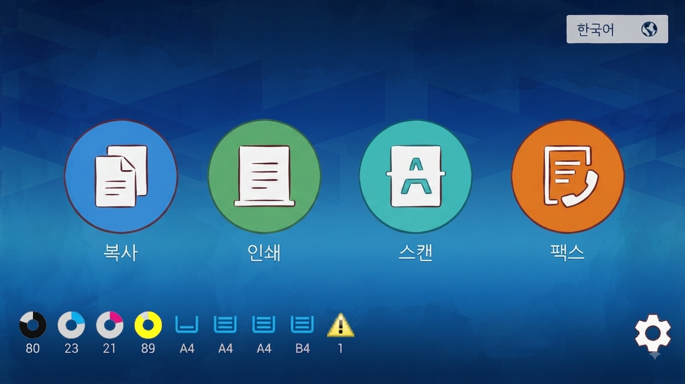
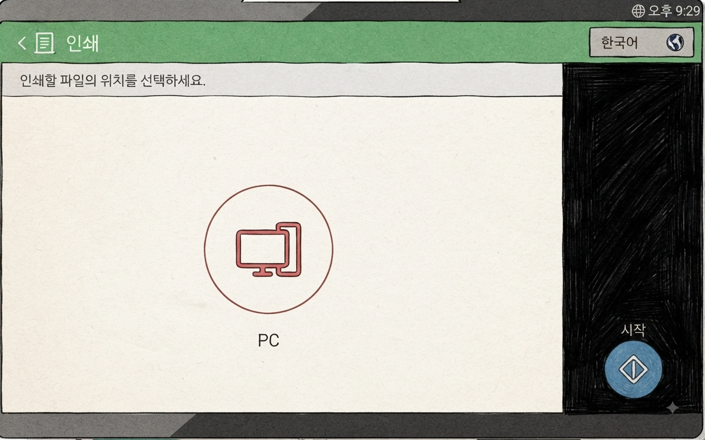
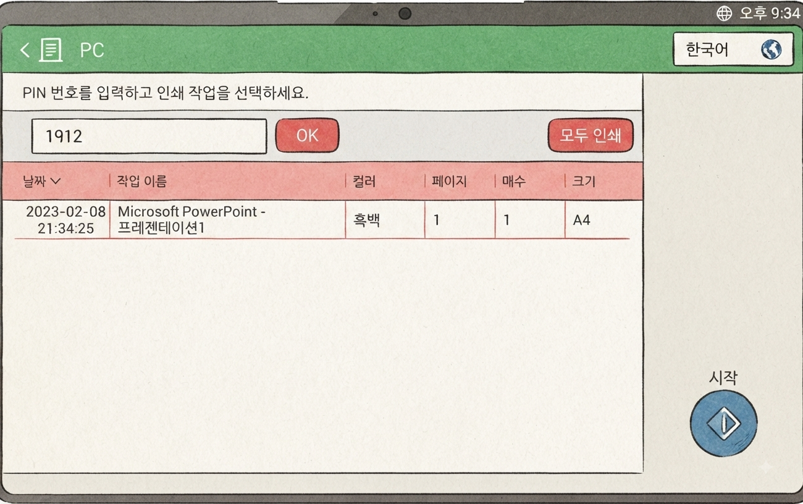
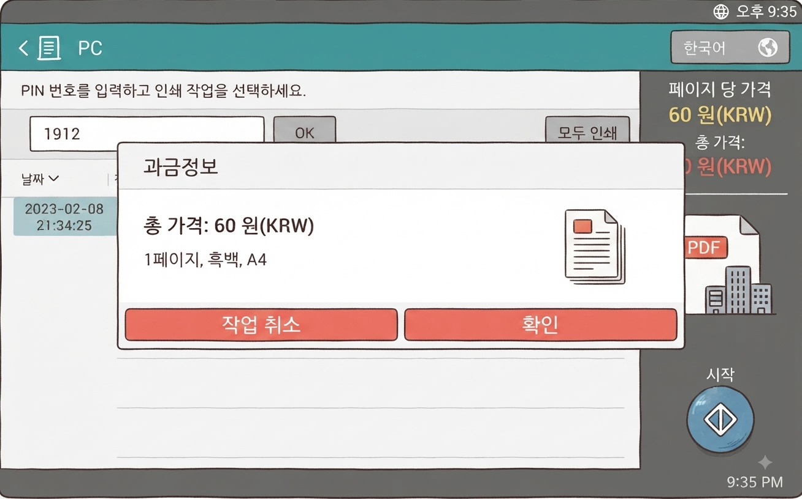

복합기 · PC 화면 사진으로 보기 SCREEN
실제 화면을 단계 순서대로 보여드립니다. 위 <인쇄하는 방법>의 1~6단계와 같은 순서입니다.
1

프린터 선택
PC에서 파일 열기 → 프린터 고르기
흑백 / 컬러 / 증명서전용(PIN9999) 선택
2

비밀번호 4자리(PIN) 입력
휴대폰 번호 뒤 4자리를 넣으세요
증명서전용은 9999가 자동으로 들어가요
3


복합기에서 인쇄 메뉴 → PC 선택
매장 내 복합기로 이동 → 인쇄(PRINT) 메뉴 선택 → PC 선택
화면이 꺼져 있으면 화면을 눌러 켜세요
4

비밀번호(PIN) 넣고 [확인] → 목록 고르기 → [시작] 누르기
PC에서 정한 비밀번호(PIN)를 넣고 [확인] → 목록에서 파일 고르기 → [시작] 누르기
종이 크기가 Letter(레터)로 되어 있으면 PC에서 A4로 다시 바꾸세요
5

금액 확인 (과금정보)
총 가격·페이지수·컬러 여부 확인
맞으면 [확인]을 누르세요
6

카드 결제
카드 찍는 기계에서 말소리가 나오면 IC카드를 꽂으세요
삼성페이·애플페이: 와이파이 표시가 있는 면에 대세요
삼성페이·애플페이는 현대카드 마스터만 가능